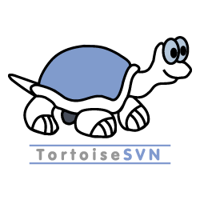
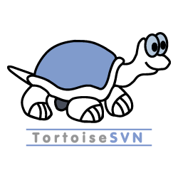

Delphi
proficient

javascript
Learning

html
Learning

css
Learning
저의 가치관은 도전을 해야 성장한다 입니다. 도전하지 않으면 실패도 없고 실패가 없으면 성공도 없다고 생각합니다. 학창 시절에 통솔력 향상을 위하여 시와산 동아리에서 반장을 하였던 적이 있습니다 동아리 이름과 같이 시 그리고 산을 뜻하는 동아리였었는데 항상 도전 하고 싶은 저의 가치관으로 동아리 축제에 참가하여 이벤트를 직접 기획하고 도전하여 가장 인기 많은 이벤트가 되어서 성공적으로 마무리 하여 상금을 받은 적이 있었습니다 이를 계기로 제 가치관에 좀 더 힘이 실렸고 성인이 되고 난 후 좀 더 새로운 경험과 도전을 하고자 사회에 일찍 발을 디뎠습니다 처음에는 백화점, 옷 가게, 휴대전화 영업, 건설 현장, 유흥주점 등 여러 경험을 하였고 대한민국 남자라면 군대얘기가 빠질 수 없다고 생각합니다 그냥 군대에 가기 보다는 최전방에서 나라를 지키고 싶은 마음이 컸기에 최전방수호병 면접을 합격하여 전방에서 근무를 하고 왔습니다 군대는 제 인생에 터닝 포인트가 되는 시간이었습니다 군 에서 배운 공동체 생활은 어떻게 하는지 등을 알게되었고 사소한 것 이라도 신중하게 되었습니다 그로 인해서 가치관이 하나 더 생긴점은 희생이 따르는 일이라면 고민하지 말고 내가 하자 였습니다 이후 회사 생활 할 때에 이 가치관이 저에게 큰 도움이 되었습니다.
긍정적 마인드는 회사생활 뿐만 아니라 평소 일상에서도 중요하다고 생각합니다. 일이 틀어지거나 또는 내가 생각한대로 풀리지 않을 때 부정적 마인드로 접근하게 되면 화를 부른다고 생각합니다. 그러한 생각을 가지고 있기 때문에 저는 항상 긍정적 사고 긍정적인 생각을 가지고서 일상을 보내거나 일을 합니다 부정적인 사고를 가진 사람과 긍정적 사고를 가진 사람을 능률 적으로 비교 해 보았을때 긍정적 사고를 가진 사람이 능률이 높을것이라고 저는 확신합니다. 저는 굉장히 꼼꼼한 성격을 가지고 있습니다 청소를 할 때 또는 무언가 작업을 할 때에는 확실하게 마무리하고 여러번 테스트하고 테스트하는 과정을 반복합니다 꼼꼼한 성격이 좋은 영향을 가져올 때도 있지만 부정적인 영향을 가져올 때도 있습니다 저는 하나에 열중하게 되면 다른것에 신경을 잘 못쓸때가 있었습니다 그러나 앞선 사회생활들과 이전 직장에서 코딩을 하며 전화를 받고 전화를 하며 코딩을 하는 것 처럼 여러가지 일을 동시에 처리 해야 할 일들이 많이 있었기에 시간이 지나면서 여러일을 동시에 처리하는 능력이 생기게 되었고 이제는 꼼꼼함으로 인한 저의 약점이 많이 개선되었습니다. 제가 팀원들과 협업 하여 일을 할 때에는 항상 먼저 나서서 하였고 팀원들과 원만한 관계를 유지하며 사회 생활을 해왔습니다 제가 항상 듣는 말 중에서 웃는 모습이 보기좋다, 항상 긍정적인거 같아서 나도 긍정적으로 생각하게 된다 라는 말을 많이 들었습니다 저의 웃음이 많고 온화한 성격 인해 주변 동료들도 함께 잘 어울릴 수 있는 저만의 성격을 가지고 있습니다.
| 일자 | 자격증명 | 발급기관 |
|---|---|---|
| 2024.09 | 정보처리산업기사 | 한국산업인력공단 |
| 2024.09 | SQL개발자(SQLD자격) | 한국데이터베이스진흥센터 |
| 2018.12 | 전산회계2급(국가공인) | 한국세무사협회 |
| 2015.11 | 2종보통운전면허 | 경찰청 |
| 회사명 | 근무기간 | 업종 | 업무 |
|---|---|---|---|
| 투윈시스템 | 2020.12 ~ 2024.07 | SI개발 | MES, ERP, 스마트팩토리 개발 |
| 고려공업검사 | 2019.07 ~ 2020.04 | 비파괴검사 | 방사선비파괴검사, 침투비파괴검사 |
MES SYSTEM 개발
MES SYSTEM(영업, 구매, 출하) 프로세스 설계 및 코드작성, 산출물 작성
Delphi, PostgreSql, Dbeaver, tortoise SVN
2021-10-01 ~ 2022-12-26(15개월)
2인
수주에서 출하까지 MES SYSTEM 중 영업 및 구매, 출하 프로세스를 설계하고 Delphi 및 PostgreSql을 사용하여 DB를 사용하고 tortoise SVN을 사용하여 협업관리 하였음.
 

기존 MES SYSTEM 유지보수 및 추가 개발
MES SYSTEM(영업, 구매, 생산, 품질, 약품) 파트 유지 보수, 추가개발 및 산출물 작성
Delphi, Oracle, Toad, tortoise SVN
2021-12-15 ~ 2022-08-31(9개월)
2인
라인 신설로 인한 기존 MES SYSTEM 전체적인 보수작업 및 Delphi, Oracle, tortoise SVN을 사용하여 추가 기능 개발
기존 MES SYSTEM 유지보수 및 추가 개발
MES SYSTEM(영업, 구매, 품질) 파트 유지 보수, 추가개발 및 산출물 작성
Delphi, Oracle, Toad, tortoise SVN
2021-07-14 ~ 2022-07-13(12개월)
2인
고주파 열처리 업체 2021년 MES SYSTME 유지보수 및 Delphi, Oracle, tortoise SVN 사용하여 기능개선, 신규 기능 개발
기존 MES SYSTEM 유지보수 및 추가 개발
MES SYSTEM(영업, 구매, 생산, 품질, 약품) 파트 유지 보수, 추가개발 및 산출물 작성
Delphi, Oracle, Toad, tortoise SVN
2022-11-15 ~ 2024-01-30(15개월)
2인
라인 신설로 인한 기존 MES SYSTEM 전체적인 보수 2차 작업 및 Delphi, Oracle, tortoise SVN을 사용하여 기능 개선, 추가 기능 개발
MES SYSTEM 개발
MES SYSTEM(영업, 구매, 생산, 품질) 파트 프로세스 설계, 개발 및 산출물 작성
Delphi, Oracle, Toad, tortoise SVN
2022-07-28 ~ 2024-01-27(18개월)
1인
기존 타 업체 MES SYSTEM 사용이 매우 미흡하여 영업, 구매, 생산, 품질 파트 프로세스 설계 및 MES SYSTEM 신규 도입 Delphi, Oracle, tortoise SVN을 사용하여 개발
MES SYSTEM 개발
MES SYSTEM 유지보수 및 추가기능 개발, 산출물 작성
Delphi, Oracle, Toad, tortoise SVN
2022-07-26 ~ 2024-01-25(18개월)
2인
최적 작업 조건 값 도출 데이터 분석 시스템 구축을 위한 MES SYSTEM 유지보수 및 Delphi, Oracle 등을 사용하여 신규 기능 개발
MES AI SYSTEM 개발
MES AI SYSTEM UI 디자인 및 개발
Delphi, Oracle, Toad, tortoise SVN, Python
2022-08-16 ~ 2022-12-15(4개월)
2인
AI 솔루션 도입으로 작업조건, 경도 경화 깊이 예측을 위한 개발 Delphi, Oracle, SVN 등을 사용하여 구축함.
MES AI SYSTEM 개발
MES AI SYSTEM UI 디자인 및 개발
Delphi, Oracle, Toad, tortoise SVN, Python
2023-08-31 ~ 2024-01-30(5개월)
2인
AI 솔루션 UI 개선 Delphi, Oracle, SVN 등을 사용하여 추가기능 개발
MES SYSTEM 개발
MES SYSTEM 개발
Delphi, PostgreSql, Dbeaver, tortoise SVN
2023-08-19 ~ 2024-06-28(10개월)
2인
타 업체 MES SYSTEM 사용이 매우 미흡하여 영업 ~ 출하 까지 프로세스 설계 및 Delphi, PostgreSql, SVN 등을 사용하여 MES SYSTEM 신규 개발
proficient
Learning
Learning
Learning
familiar
familiar
familiar
familiar
familiar
| NAME | 김준석 |
|---|---|
| clotheswing@naver.com | |
| Phone | 010-8458-6646 |
| Adress | 부산광역시 사상구 괘법동 |
| GitHub |